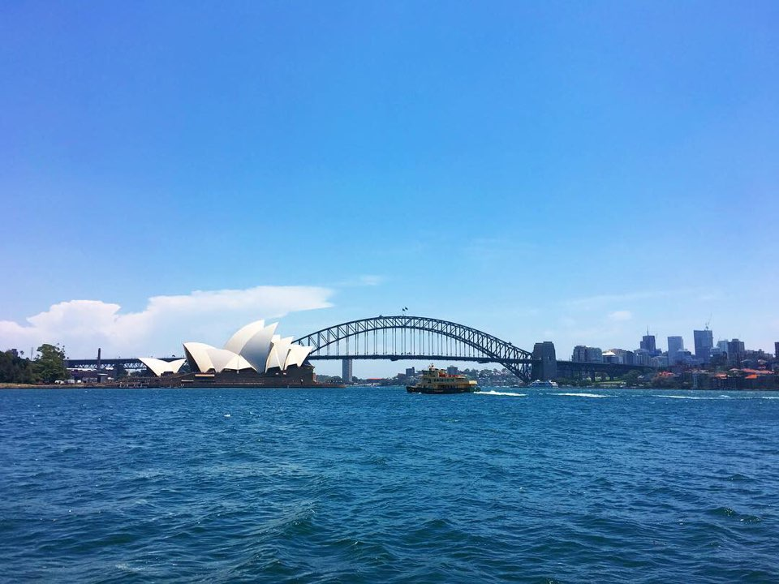
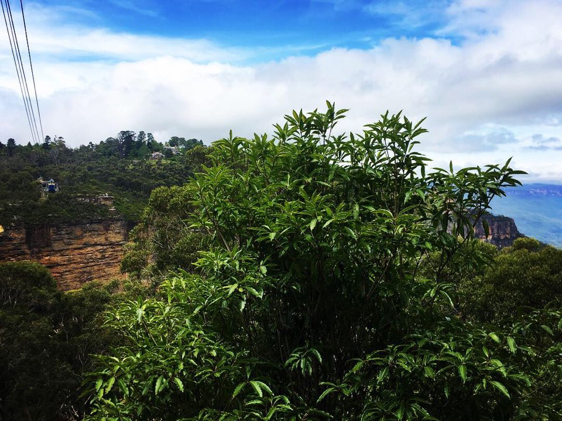
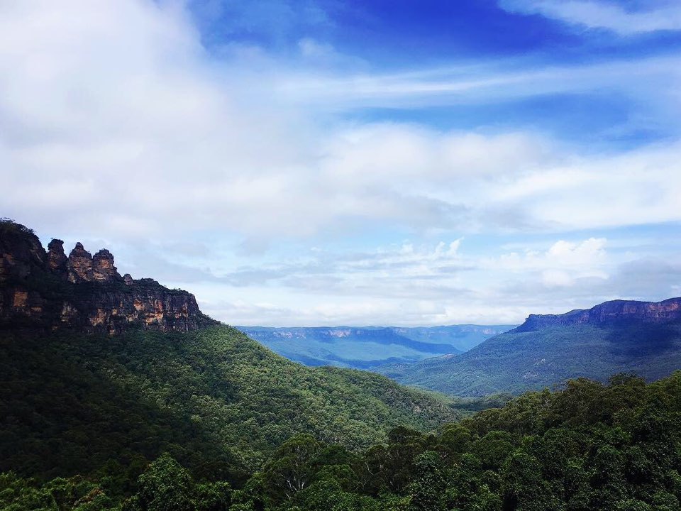
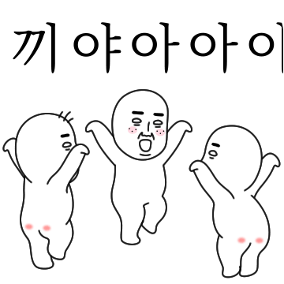
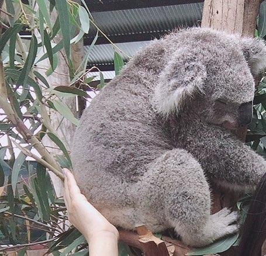
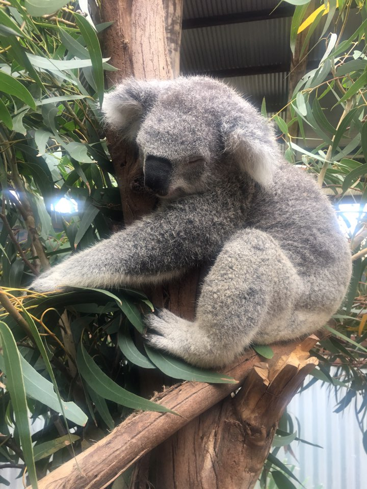
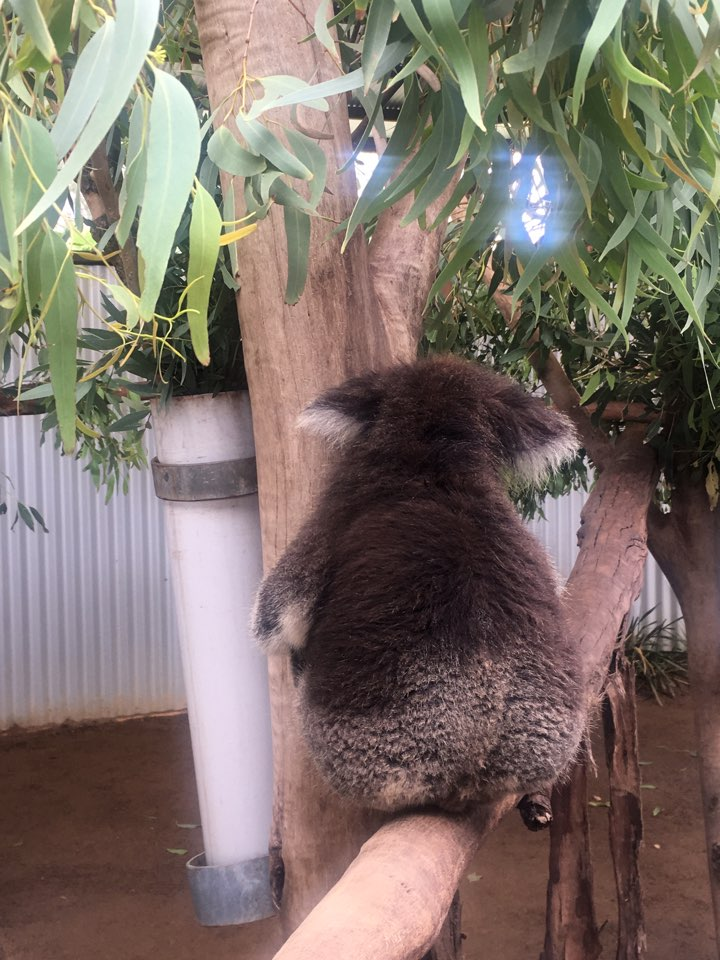

모두 안녕? 나 겨울에 엄마랑 호주 잠깐 갔단말임. 근데 그거 앎?^^ 얼마만에 보는 파란하늘이었는지..ㅠㅠ (미세먼지..ㅂㄷㅂㄷ)
   아 호주는 우리랑 계절이 반대야 그래서 거기는 초여름 정도 됐거든? 얼마 만에 보던 파란 하늘과 직사광선 햇빛과 푸르른 나무들이었는지 ㅠㅠㅠㅠ 진짜 감동 ㅠ 일정이 다 짜여 있고 다 재밌어 보였는데 나는 일단 코알라 보는 게 제일 기대됐어.

잠자는 호주의 커염둥이 코알라 ><
가이드분이 설명해 주셨는데, 그거 아니..? 코알라가 평균 20시간 숙면하고 4시간 존다는 거..? 그거 듣고 진짜 어이없었잖아. 게을러 서냐고? 아니?! 엄청 왕 귀여워서지!!><ㅠㅠㅠㅠ 어떻게 그럴 수가 ㅠㅠㅠㅠ 유칼립투스 잎 먹으면서 꾸벅꾸벅 존대 세상에 ㅠㅠㅠ 광광 울어ㅠ 얼굴을 배까지 웅크리고 자는 건 완전 숙면이고 얼굴이 보이는데 눈을 깜빡... 깜빡하거나 감고 있으면 졸고 있는거래...ㅠㅠㅠ 넘 귀엽지 ㅜㅜ

#따뜻 #폭신 #말랑 #포슬 #코알라궁둥이
체험 중에 코알라 엉덩이를 만져볼 수가 있었어 (얼굴 만지는 건 싫어한대) 근데... 악 ㅠㅠㅠㅠㅠㅠ 머야 머야 고양이 강아지랑은 또 달라 진짜... 따뜻한데 털 때문에 보드랍고 폭신하고 말랑말랑하면서 부들부들 포슬포슬하고..진짜 ㅠㅠㅠㅠ 중독성 갑이야 ㅠㅠㅠ 하루 종일 쓰다듬고 싶어 ㅠㅠㅠ

암튼, 나중에 호주 갈 수 있으면 꼭 가 바. 공기도 너무 좋고 코알라가 귀엽고, 또 코알라가 귀엽고, 뭣보다 코알라가 귀엽고, 아무튼 코알라가 귀여워! 그럼 이만 귀여운 코알라 사진 몇 장 풀면서 후기 마칠게~ 반응 좋으면 2탄 있을 수도 있고^^ 안뇽-
 